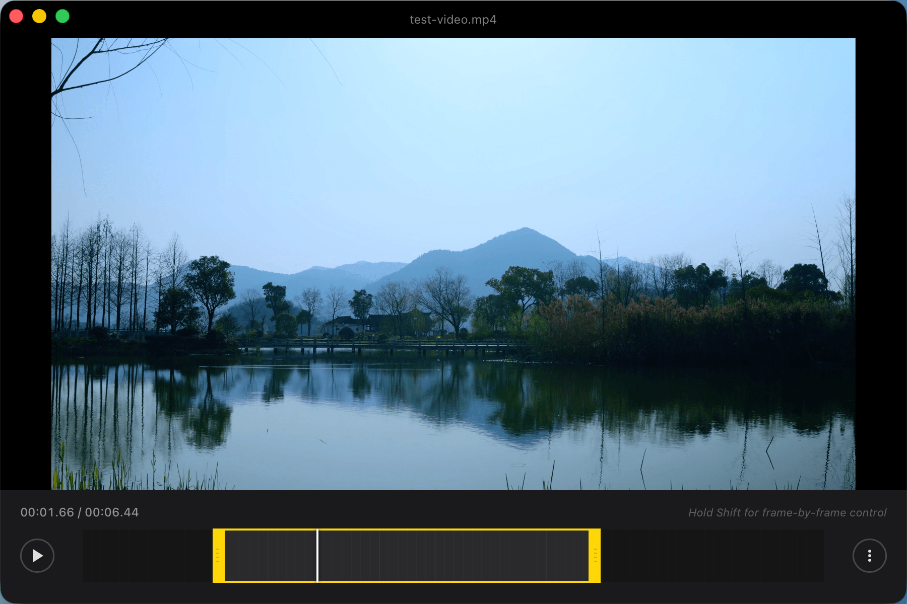
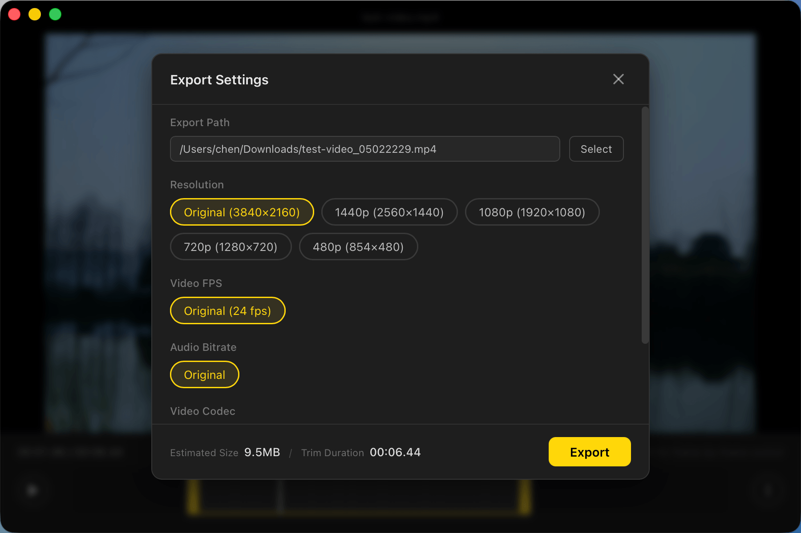

xattr -cr /Applications/TinyCut.app
| H.264 | H.265 / HEVC | ||
|---|---|---|---|
| MacOS | Apple VideoToolbox | h264_videotoolbox |
hevc_videotoolbox |
| Windows | NVIDIA NVENC | h264_nvenc |
hevc_nvenc |
| Windows | Intel Quick Sync | h264_qsv |
hevc_qsv |
| Windows | AMD AMF | h264_amf |
hevc_amf |